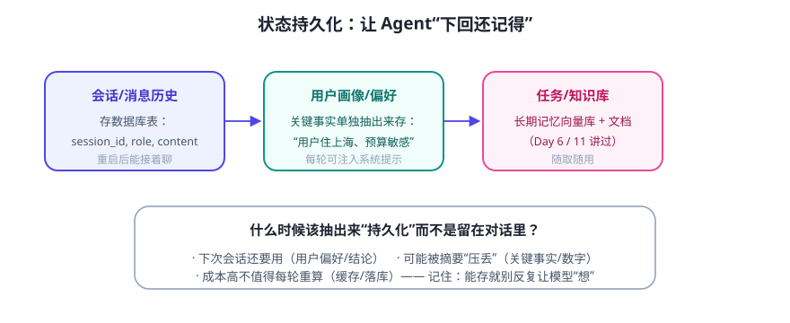

Day 6 讲了记忆的三种类型。今天回答工程问题：存在哪？什么时候抽出来存？怎么在每轮对话时用回去？
三类要“落库”的状态

落地建议（由简到繁）
- 第一步：SQLite 存对话。一张表
messages(session_id, role, content, ts)就能实现“关掉重开还能接着聊”。Python 标准库自带 sqlite3，零依赖。 - 第二步：抽用户画像。每轮结束后让模型输出“本次新确认的用户事实”（如“住上海、预算敏感”），写入
user_profile表；下一轮注入系统提示词。比翻历史便宜得多。 - 第三步：知识进向量库。长期知识/资料走 RAG（Day 11/12），从向量库检索相关片段注入上下文。
每轮“装进上下文”的组装顺序（参考）
系统提示词（人设/规则） + 用户画像（从 profile 表读出：住上海、预算敏感） + 相关知识（从向量库检索：最近 3 条相关笔记） + 最近对话（最近 N 轮原文 + 更早的摘要） + 本轮用户输入 ──────────────────── 以上全部进入上下文窗口 ────────────────────
三个常见坑
- 把整个历史当“记忆”：又贵又容易超窗。画像 + 摘要才是长期记忆的正解。
- 存了不校验：模型抽出的“用户事实”可能抽错（把“我讨厌 X”抽成喜欢）。加人工确认或规则过滤。
- 忘了隐私与删除：用户问“删掉我的数据”时，你要真能删。设计表结构时就留 user_id，别做“删不掉”的 Agent。
💡 用 Day 7 的代码感受：
mini_agent.py 里 NOTES 是内存字典，程序一关就没了。把 FACTS 换成 sqlite3 表，就是一次“状态持久化实战”——改动不到 20 行，强烈建议试试。✍️ 今日练习（约 20 分钟）
- 设计你项目的三张表：messages / user_profile / knowledge_chunks，各写 3 个字段。
- （选做）改 Day 7 迷你 Agent：把 FACTS 存进 sqlite3，重启后运行
看看记忆验证还在。 - 写下你的“每轮上下文组装顺序”（参照上面的 pre 块）。
📌 今日小结
三类落库会话历史（SQLite 表）· 用户画像（抽取+注入）· 知识（向量库检索）
组装顺序系统提示 → 画像 → 相关知识 → 近轮历史 → 本轮输入
三坑历史≠记忆 · 画像要校验 · 别忘了删除与隐私
动手点把迷你 Agent 的内存记忆改成 sqlite3，<20 行
明天预告：第三周实战——做一个“定时自动收集 + 总结 + 报告”的信息助手，串起编排与持久化。